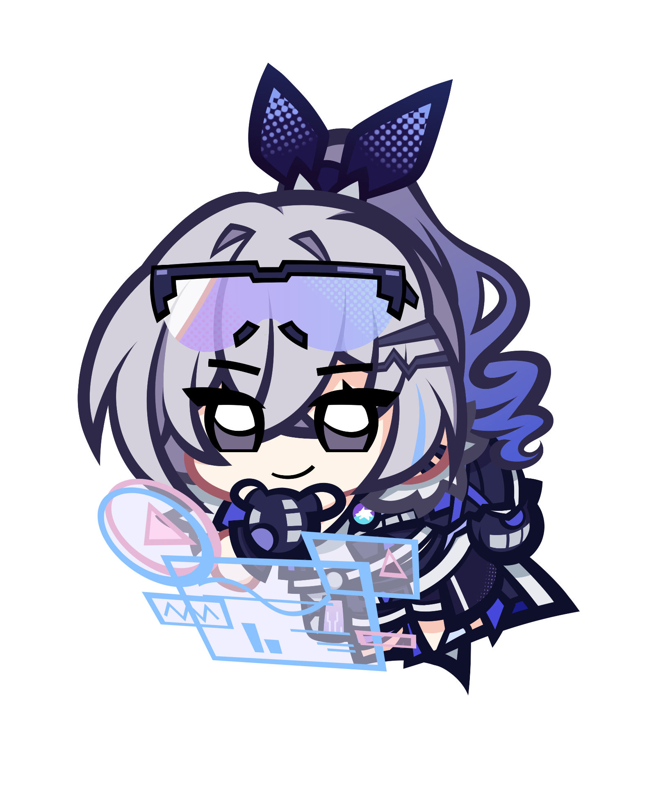

Yukiharu's Commissions
Commission Pricing
Commissions Tracker
Trello Board
Sadly, Trello only supports a compact, non-interactive mode for boards at the moment, so you'll have to click on the embed and visit their site for the time being.
Kinda looks like it roughly displays the 3 columns I have in it though.
From left to right: "Not Started", "In Progress", and "Completed" commissions.
The preview can only display between 0 and 3 boxes per, though. So you'll mostly be using this to tell if I have anything queued or not.
Previous Works
Here's some Keychains I made with both Hexi and Cola!They were later printed as Keychains that tomogumodu gave out during Cosplay Matsuri 2023!
Arona (Blue Archive)
Aru (Blue Archive)


Yuuka (Blue Archive)
Nahida (Genshin Impact)
Furina (Genshin Impact)
Fun fact abot Furina! She had a different pose from everyone else, but the same dimensions.
Due to that, she ended up being printed smaller than everyone else!
Kafka (Honkai Star Rail)
Silverwolf (Honkai Star Rail)
...And more.
I thought the keychains made for Cosmatsuri were a good place to start.
I'll add more in the near future, don't worry!